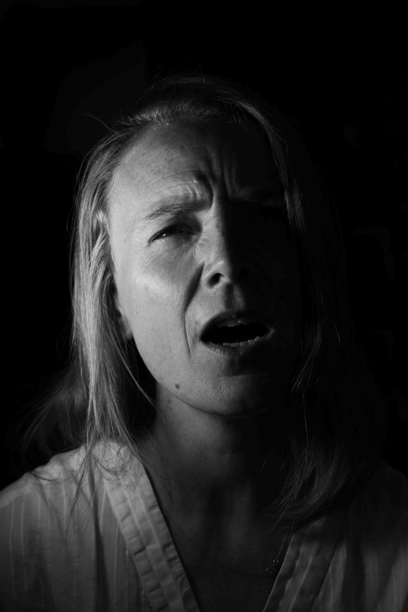

Listen to this page:
Fiona is a social scientist working to understand what factors affect people’s choices, particularly with respect to access to energy and energy poverty.
"Ashamed"

She explains to me that the state of the planet and the climate crisis is increasingly featuring in her discussions with her research participants in Africa; something that often feels like a bigger issue than the objective of her work on cookstoves and energy, leaving her sometimes feeling useless. At the same time, she feels ashamed that the research and practice community hasn’t come further and done more: “I cringe sometimes when I write about the current state of knowledge in research papers – we know this and yet we see no action. It’s repetitive and depressing”.
"Outraged"

She tells me that she feels outraged – “it’s an explosive, disruptive shock. But perhaps it’s a positive thing in a way, she explains: “it feels like it might lead to some kind of shift, some watershed, or a catalyst”.
"Determined"

Her children help her to be determined, though – she can’t give up on them. They have embraced buying second hand and understand why, she explains - clearly humbled but proud. The children even been a driving force to reduce the family’s impacts on the environment.
When I ask her about the future, she explains she doesn’t feel hope: “the word hope is not good enough – it’s far away and doesn’t imply action. Hope won’t drive me forwards. But being outraged, having a sense of purpose, I need something that drives me not to give up, but I don’t want to call it hope.”

Visit the project website